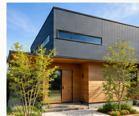
不動産事業（売買・賃貸）
REAL ESTATE
土地・建物の売買・賃貸を通じて、理想の住まい探しをサポートします。
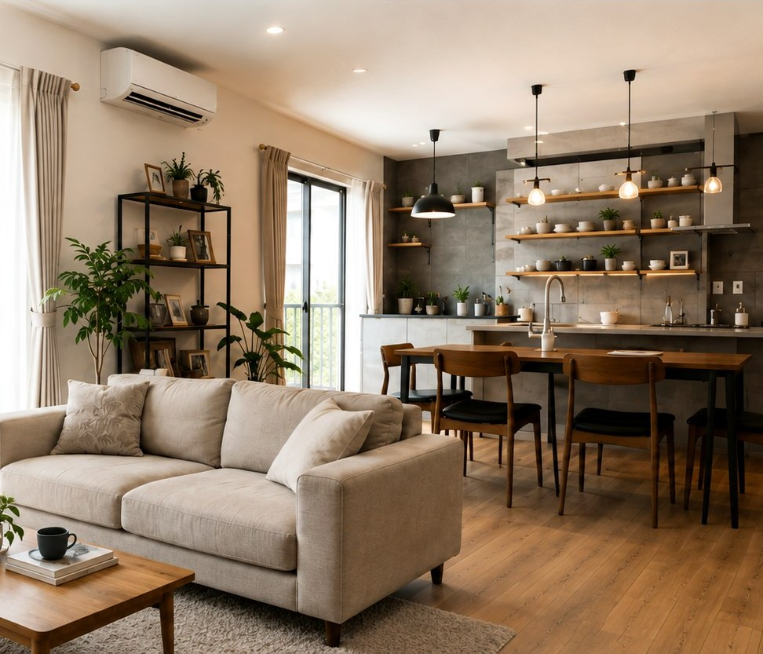
RENOVATION / REAL ESTATE / REFORM
住まいを直すだけではなく、その場所で始まる次の暮らしまで考える。
東川口を拠点に、住まいと不動産の価値をつくるパートナーです。
02CONCEPT
RENOVATION FOR A BETTER LIFE
今の暮らしに合わせて、間取りも、素材も、デザインも。
住まいを見直すリノベーションで、
これからの暮らしに新しい価値をつくります。
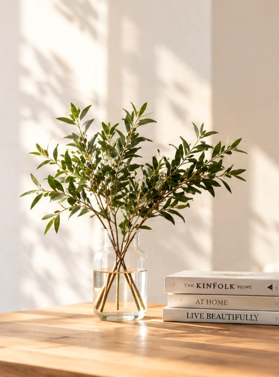
A new value
for your life.
今あるものに、
新しい価値を。
03RENOVATION
CREATE A NEW VALUE IN YOUR HOME
戸建て・マンションを問わず、
暮らしに合わせたリノベーションで
理想の住まいをカタチにします。
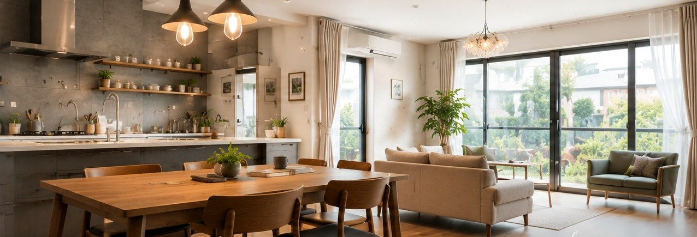
今の暮らしを、
これからの暮らしへ。
Renovation
for a better tomorrow.
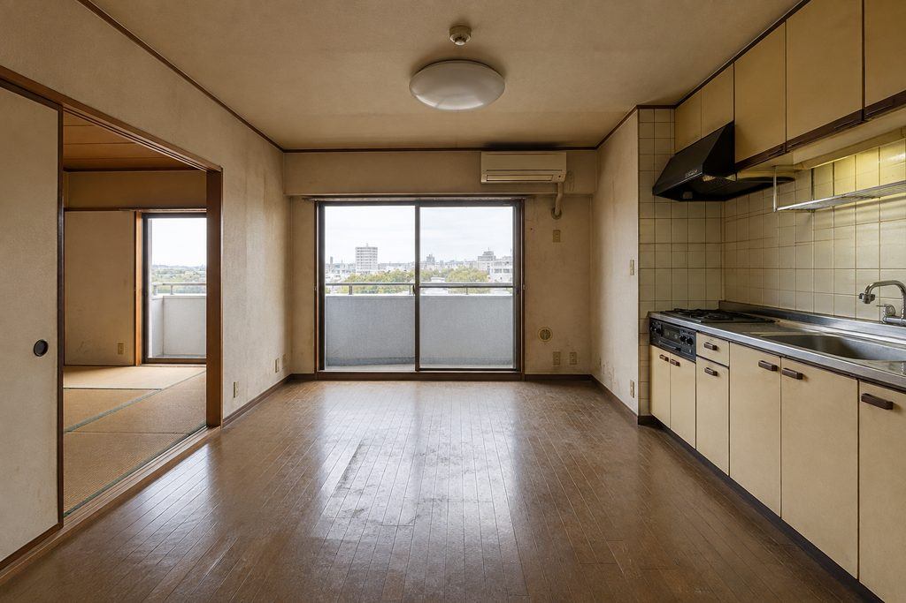
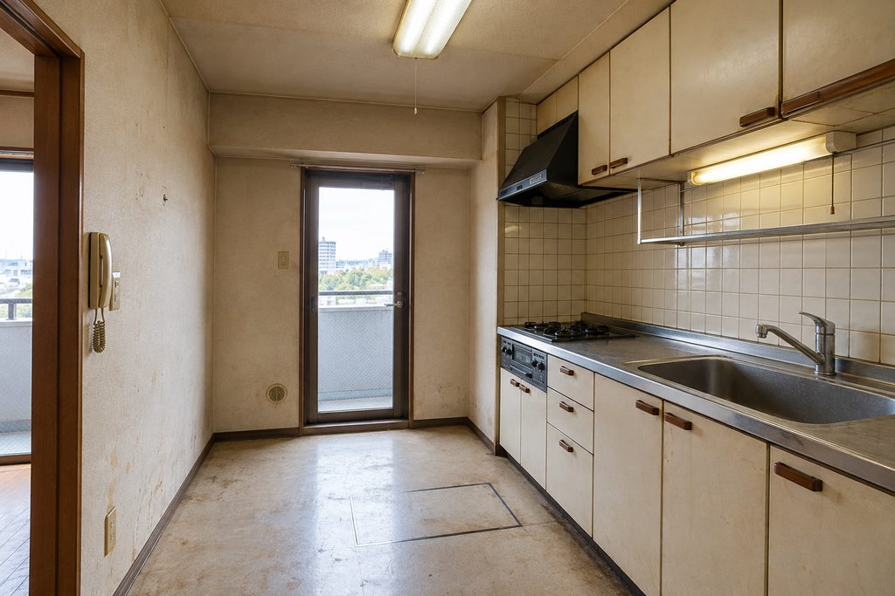
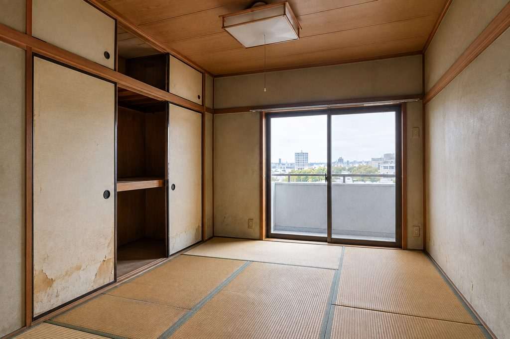
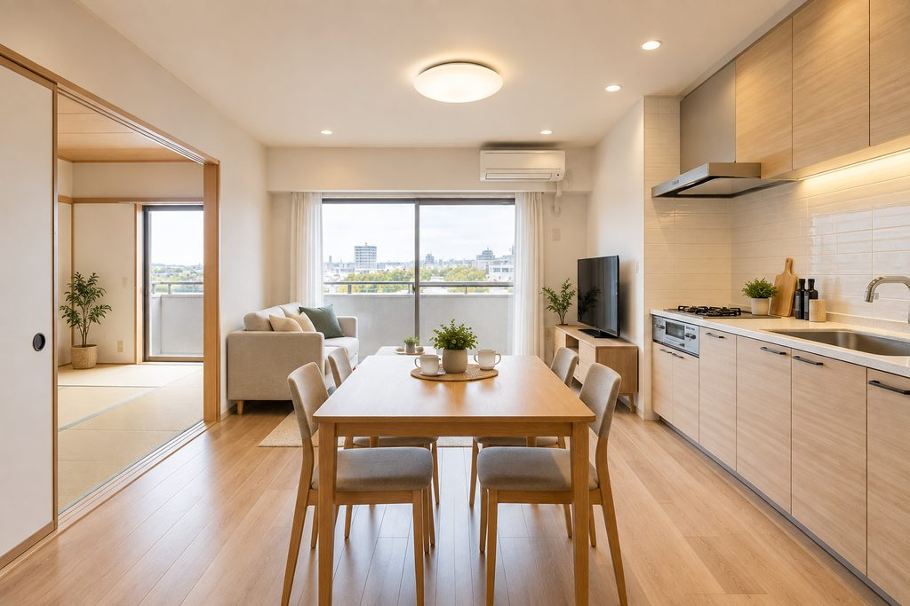
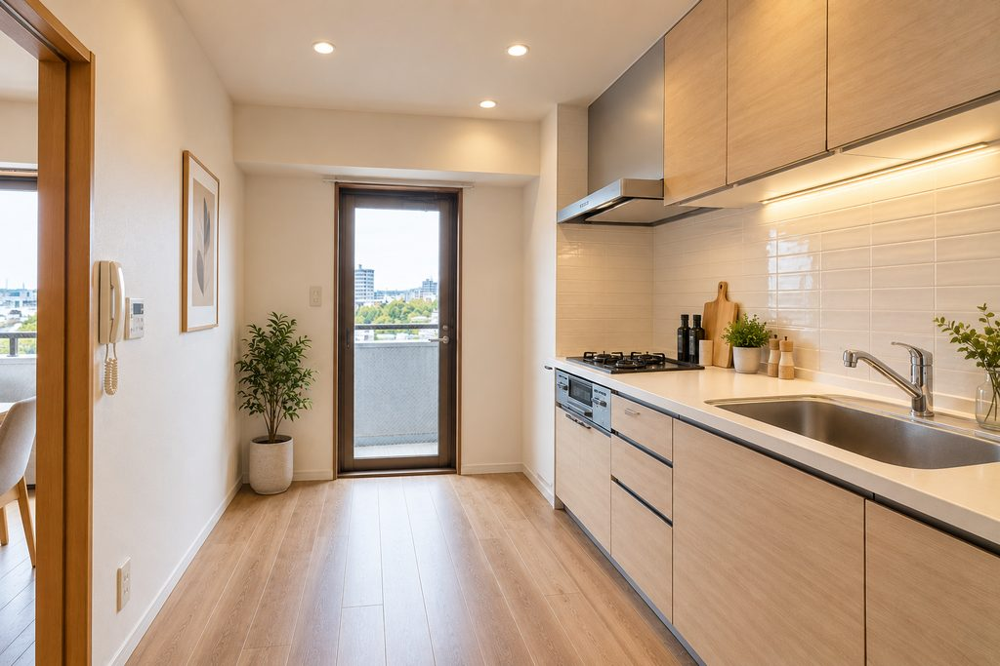
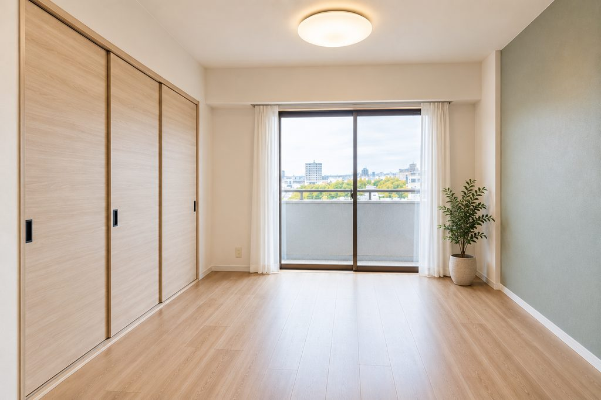
01 / 03
キッチンと和室に面したLDK。床や壁、キッチンの扉に年数による汚れや色あせが目立ち、全体に暗い印象でした。
床・壁・天井を明るい色調で整え、キッチンも木目調の扉に一新しました。和室とのつながりはそのままに、光が広がる開放的なLDKになりました。
タイル張りの壁に吊り戸棚が並ぶキッチン。床や壁の汚れと、照明の暗さが気になる状態でした。
木目調のキッチンと白いタイルの壁で、明るく清潔な印象に。床もフローリングに張り替え、手元を照らす照明も備えています。
押入れのある畳敷きの和室。襖や壁に傷みや色あせが見られる状態でした。
畳をフローリングに、押入れを木目調の引き戸の収納に変えました。壁の一面に落ち着いた色のクロスを取り入れ、明るく落ち着いた洋室に仕上げています。
Renovation
after.
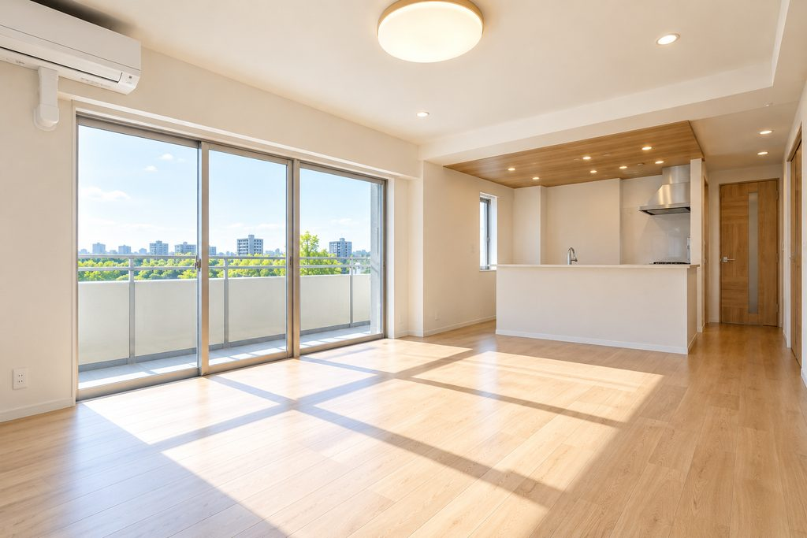
販売中 DEMOマンション
東京都北区浮間1丁目
5,880万円
詳しく見る→戸建て
埼玉県川口市戸塚（サンプル）
4,280万円
詳しく見る→「DEMO」表示の物件は、掲載情報・写真とも提案用イメージです。現在販売中の物件ではありません。
暮らしに、もっと選べる価値を。MORE VALUE FOR YOUR LIFE.

REAL ESTATE
土地・建物の売買・賃貸を通じて、理想の住まい探しをサポートします。
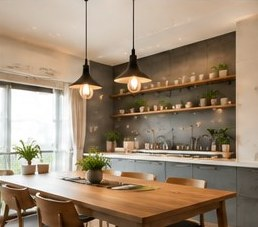
RENOVATION
今ある住まいに新しい価値を。ライフスタイルに合わせた空間づくりをご提案します。
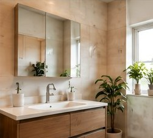
REFORM
部分的な改修から全面リフォームまで、快適で安心な暮らしを実現します。
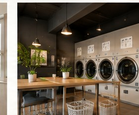
COIN LAUNDRY
地域の暮らしを支えるコインランドリーの運営・サポートを行っています。
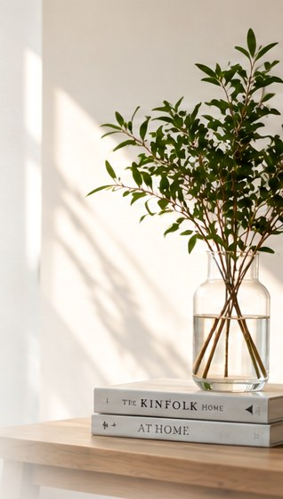
Better spaces
Brighter lives.
06ABOUT
ABOUT YUSHIN
創業以来、川口市・東川口エリアを中心に、
住まいと不動産に関わるご相談をお受けしてきました。
一つひとつの仕事にきちんと向き合い、暮らしに寄り添ったご提案を大切にしています。
— YUSHIN COMPANY —
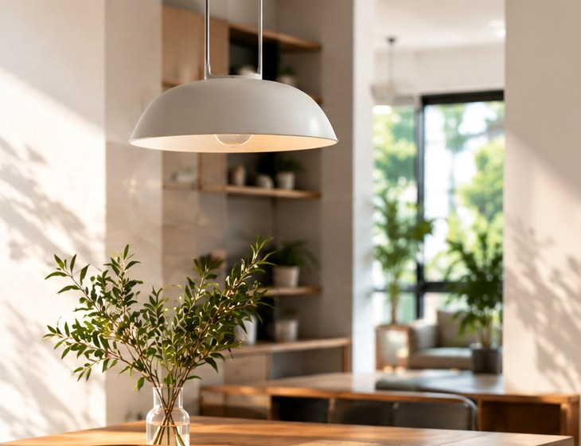
住まいの
可能性を、
これからの
暮らしへ。
MORE VALUE
FOR YOUR LIFE.
YUSHIN
株式会社ユウシン
人と暮らしに、
誠実に。
地域とともに、
これからも。
07FAQ
FREQUENTLY ASKED QUESTIONS
リノベーションについて、
お客様からよくいただくご質問を
まとめました。
ご不明な点がございましたら、
お気軽にお問い合わせください。
— YUSHIN FAQ —
はい、無料です。現地調査・お見積もりまで費用はかかりません。まずはお気軽にご相談ください。
内容や規模によりますが、一般的な住宅リノベーションでは約1〜3か月が目安です。事前にスケジュールをご案内いたします。
工事内容によっては可能です。ただし、生活に支障が出る場合もありますので、事前に詳しくご説明し、最適な方法をご提案いたします。
戸建て・マンション・店舗・オフィスなど、幅広く対応しています。築年数や構造に関わらず、まずはご相談ください。
はい、提携する金融機関のリフォームローンをご利用いただけます。詳しくは担当者までお問い合わせください。
はい、可能です。お客様のライフスタイルやご希望に合わせて、専門スタッフがデザイン提案をいたします。
はい、工事後も安心してお住まいいただけるよう、保証・アフターサービスをご用意しています。詳細は担当者までご説明いたします。
はい、可能です。部分的なリフォームや設備の交換など、小さな工事からでもお気軽にご相談ください。
08CONTACT
CONTACT US
リノベーションのご相談・お見積もりは無料です。
住まいのことなら、どんな小さなことでも
お気軽にお問い合わせください。
— YUSHIN CONTACT —
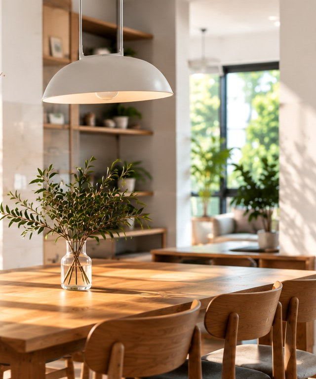
Let's talk
about your future.
YUSHIN
株式会社ユウシン
暮らしに、
もっといい
未来を。
理想の暮らしを、一緒にかたちに。
まずはお気軽にご相談ください。